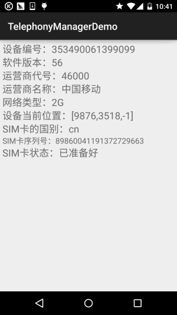
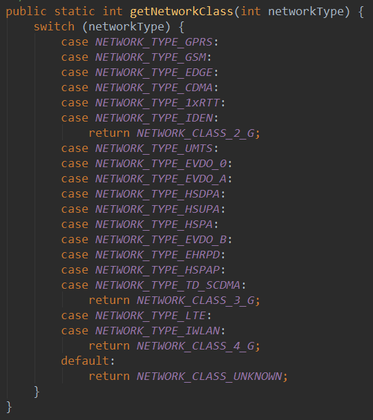
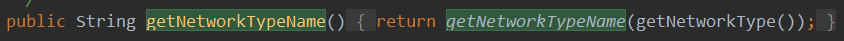
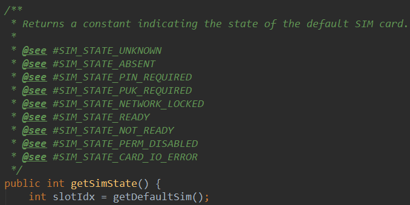
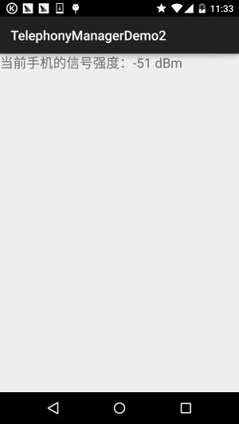

一、本节引言：
本章节是Android基础入门教程的最后一章，主要讲解是一些零零散散的一些知识点，以及一些遗漏 知识点的补充，这些零散的知识点包括，各种系统服务的使用，比如本节的电话管理器，短信管理器， 振动器，闹钟，壁纸等等，还有传感器之类的东西！乱七八糟什么都有哈！好的，本节我们要学习的 是TelephonyManager，见名知义：用于管理手机通话状态，获取电话信息(设备信息、sim卡信息以及 网络信息)，侦听电话状态(呼叫状态服务状态、信号强度状态等)以及可以调用电话拨号器拨打电话！ 话不多开始本节内容~
官方API:TelephonyManager
二、获得TelephonyManager的服务对象
TelephonyManager tManager = (TelephonyManager)getSystemService(Context.TELEPHONY_SERVICE);
三、用法示例
1)调用拨号器拨打电话号码
Uri uri=Uri.parse("tel:"+电话号码);
Intent intent=new Intent(Intent.ACTION_DIAL,uri);
startActivity(intent);
2)获取Sim卡信息与网络信息
运行效果图：

实现代码：
布局文件：activity_main.xml：
<LinearLayout xmlns:android="http://schemas.android.com/apk/res/android"
xmlns:tools="http://schemas.android.com/tools"
android:layout_width="match_parent"
android:layout_height="match_parent"
android:orientation="vertical"
android:padding="5dp"
tools:context=".MainActivity">
<TextView
android:id="@+id/tv_phone1"
android:layout_width="match_parent"
android:layout_height="wrap_content"
android:textSize="20sp" />
<TextView
android:id="@+id/tv_phone2"
android:layout_width="match_parent"
android:layout_height="wrap_content"
android:textSize="20sp" />
<TextView
android:id="@+id/tv_phone3"
android:layout_width="match_parent"
android:layout_height="wrap_content"
android:textSize="20sp" />
<TextView
android:id="@+id/tv_phone4"
android:layout_width="match_parent"
android:layout_height="wrap_content"
android:textSize="20sp" />
<TextView
android:id="@+id/tv_phone5"
android:layout_width="match_parent"
android:layout_height="wrap_content"
android:textSize="20sp" />
<TextView
android:id="@+id/tv_phone6"
android:layout_width="match_parent"
android:layout_height="wrap_content"
android:textSize="20sp" />
<TextView
android:id="@+id/tv_phone7"
android:layout_width="match_parent"
android:layout_height="wrap_content"
android:textSize="20sp" />
<TextView
android:id="@+id/tv_phone8"
android:layout_width="match_parent"
android:layout_height="wrap_content"
android:textSize="16sp" />
<TextView
android:id="@+id/tv_phone9"
android:layout_width="match_parent"
android:layout_height="wrap_content"
android:textSize="20sp" />
</LinearLayout>
MainActivity.java：
public class MainActivity extends AppCompatActivity {
private TextView tv_phone1;
private TextView tv_phone2;
private TextView tv_phone3;
private TextView tv_phone4;
private TextView tv_phone5;
private TextView tv_phone6;
private TextView tv_phone7;
private TextView tv_phone8;
private TextView tv_phone9;
private TelephonyManager tManager;
private String[] phoneType = {"未知","2G","3G","4G"};
private String[] simState = {"状态未知","无SIM卡","被PIN加锁","被PUK加锁",
"被NetWork PIN加锁","已准备好"};
@Override
protected void onCreate(Bundle savedInstanceState) {
super.onCreate(savedInstanceState);
setContentView(R.layout.activity_main);
//①获得系统提供的TelphonyManager对象的实例
tManager = (TelephonyManager) getSystemService(Context.TELEPHONY_SERVICE);
bindViews();
}
private void bindViews() {
tv_phone1 = (TextView) findViewById(R.id.tv_phone1);
tv_phone2 = (TextView) findViewById(R.id.tv_phone2);
tv_phone3 = (TextView) findViewById(R.id.tv_phone3);
tv_phone4 = (TextView) findViewById(R.id.tv_phone4);
tv_phone5 = (TextView) findViewById(R.id.tv_phone5);
tv_phone6 = (TextView) findViewById(R.id.tv_phone6);
tv_phone7 = (TextView) findViewById(R.id.tv_phone7);
tv_phone8 = (TextView) findViewById(R.id.tv_phone8);
tv_phone9 = (TextView) findViewById(R.id.tv_phone9);
tv_phone1.setText("设备编号：" + tManager.getDeviceId());
tv_phone2.setText("软件版本：" + (tManager.getDeviceSoftwareVersion()!= null?
tManager.getDeviceSoftwareVersion():"未知"));
tv_phone3.setText("运营商代号：" + tManager.getNetworkOperator());
tv_phone4.setText("运营商名称：" + tManager.getNetworkOperatorName());
tv_phone5.setText("网络类型：" + phoneType[tManager.getPhoneType()]);
tv_phone6.setText("设备当前位置：" + (tManager.getCellLocation() != null ? tManager
.getCellLocation().toString() : "未知位置"));
tv_phone7.setText("SIM卡的国别：" + tManager.getSimCountryIso());
tv_phone8.setText("SIM卡序列号：" + tManager.getSimSerialNumber());
tv_phone9.setText("SIM卡状态：" + simState[tManager.getSimState()]);
}
}
对了，别忘了在AndroidManifest.xml中加上权限哦！
<!-- 添加访问手机位置的权限 -->
<uses-permission android:name="android.permission.ACCESS_COARSE_LOCATION"/>
<!-- 添加访问手机状态的权限 -->
<uses-permission android:name="android.permission.READ_PHONE_STATE"/>
对了可能你想获取网络制式，而非普通的2G,3G,4G这样，其实我们可以到TelephonyManager类的源码里：

我们可以根据这个networkType的值，判断不同的网络制式，比如，如果networkType == 1 那个是GPRS这种制式的~而这个networkType的值可以通过

即这个getNetworkType()方法获得！好了，就这么简单，可以像上面列好一个数组然后根据 不同的下标显示不同的值！ 对了，还有Sim卡状态的，字符串数组中的值，都可以到源码中看：

其他的可自行探索~
3)获取手机的信号强度
网络信号强度的单位是dBm(毫瓦分贝)，一般用负数表示，正常手机信号变化范围是从-110dBm (差)到-50dBm(好)之间，如果你比-50dBm还小的话，说明你就站在基站的附近，比如我的n5显示 的信号强度就是-51dBm，有时是-59dBm，因为隔壁就是南软大楼，上面就有基站...
另外2G，3G，4G获得信号强度的方式都是重写PhoneStateListener的onSignalStrengthsChanged() 方法，当信号强度发生改变的时候就会触发这个事件，我们可以在这个事件里获取信号强度！
手机获取信号强度代码示例：
dBm =-113+2*asu这是一个固定公式，asu(独立信号单元)
运行效果图：

实现代码：
MainActivity.java：
public class MainActivity extends AppCompatActivity {
private TextView tv_rssi;
private MyPhoneStateListener mpsListener;
private TelephonyManager tManager;
@Override
protected void onCreate(Bundle savedInstanceState) {
super.onCreate(savedInstanceState);
setContentView(R.layout.activity_main);
tManager = ((TelephonyManager)getSystemService(Context.TELEPHONY_SERVICE));
tv_rssi = (TextView) findViewById(R.id.tv_rssi);
mpsListener = new MyPhoneStateListener();
tManager.listen(mpsListener,290);
}
private class MyPhoneStateListener extends PhoneStateListener {
private int asu = 0,lastSignal = 0;
@Override
public void onSignalStrengthsChanged(SignalStrength signalStrength) {
asu = signalStrength.getGsmSignalStrength();
lastSignal = -113 + 2 * asu;
tv_rssi.setText("当前手机的信号强度：" + lastSignal + " dBm" );
super.onSignalStrengthsChanged(signalStrength);
}
}
}
另外因为笔者的卡都是移动卡，联通和电信的不知道，但是从源码里看到这样几个API：
- getEvdoDbm()：电信3G
- getCdmaDbm()：联通3G
- getLteDbm()：4G
这些应该是可以直接获得dBm信号强度的，有条件的可以试试~
还有，别忘记加上权限了哦！
<!-- 添加访问手机状态的权限 -->
<uses-permission android:name="android.permission.READ_PHONE_STATE"/>
4)监听手机的所有来电
对于监听到的通话记录结果,你可以采取不同的方式获取到,这里用到的是把通话记录写入到文件中, 而你也可以以短信的形式发送给你,或者是上传到某个平台,当然如果通信记录不多的话还可以用短信 多了的话就很容易给人发现的了！另外,这里用的是Activity而非Service,就是说要打开这个Activity, 才可以进行监听,通常我们的需求都是要偷偷滴在后台跑的,因为时间关系就不写Service的了,如果需要 可自行修改,让Service随开机一起启动即可!
代码解析:
很简单,其实就是重写TelephonyManager的一个通话状态监听器PhoneStateListener 然后调用TelephonyManager.listen()的方法进行监听,当来电的时候, 程序就会将来电号码记录到文件中！
实现代码：
MainActivity.java：
public class MainActivity extends Activity
{
TelephonyManager tManager;
@Override
public void onCreate(Bundle savedInstanceState)
{
super.onCreate(savedInstanceState);
setContentView(R.layout.main);
// 取得TelephonyManager对象
tManager = (TelephonyManager)
getSystemService(Context.TELEPHONY_SERVICE);
// 创建一个通话状态监听器
PhoneStateListener listener = new PhoneStateListener()
{
@Override
public void onCallStateChanged(int state, String number)
{
switch (state)
{
// 无任何状态
case TelephonyManager.CALL_STATE_IDLE:
break;
case TelephonyManager.CALL_STATE_OFFHOOK:
break;
// 来电铃响时
case TelephonyManager.CALL_STATE_RINGING:
OutputStream os = null;
try
{
os = openFileOutput("phoneList", MODE_APPEND);
}
catch (FileNotFoundException e)
{
e.printStackTrace();
}
PrintStream ps = new PrintStream(os);
// 将来电号码记录到文件中
ps.println(new Date() + " 来电：" + number);
ps.close();
break;
default:
break;
}
super.onCallStateChanged(state, number);
}
};
// 监听电话通话状态的改变
tManager.listen(listener, PhoneStateListener.LISTEN_CALL_STATE);
}
}
运行结果：
注意!要让这个程序位于前台哦!用另一个电话拨打该电话,接着就可以在DDMS的file Explorer的应用 对应包名的files目录下看到phoneList的文件了,我们可以将他导出到电脑中打开,文件的大概内容如下:
THR Oct 30 12:05:48 GMT 2014 来电: 137xxxxxxx
对了，别忘了权限！
<!-- 授予该应用读取通话状态的权限 -->
<uses-permission android:name="android.permission.READ_PHONE_STATE"/>
5)黑名单来电自动挂断
所谓的黑名单就是将一些电话号码添加到一个集合中,当手机接收到这些电话的时候就直接挂断！ 但是Android并没有给我们提供挂断电话的API,于是乎我们需要通过AIDL来调用服务中的API来 实现挂断电话!
于是乎第一步要做的就是把android源码中的下面两个文件复制到src下的相应位置,他们分别是: com.android.internal.telephony包下的ITelephony.aidl;
android.telephony包下的NeighboringCellInfo.aidl;
要创建对应的包哦!就是要把aidl文件放到上面的包下!!! 接着只需要调用ITelephony的endCall即可挂断电话!
这里给出的是简单的单个号码的拦截,输入号码,点击屏蔽按钮后,如果此时屏蔽的电话呼入的话; 直接会挂断,代码还是比较简单的,下面粘一下,因为用的模拟器是Genymotion,所以就不演示 程序运行后的截图了!
MainActivity.java：
public class MainActivity extends Activity {
private TelephonyManager tManager;
private PhoneStateListener pListener;
private String number;
private EditText locknum;
private Button btnlock;
public class PhonecallListener extends PhoneStateListener
{
@Override
public void onCallStateChanged(int state, String incomingNumber) {
switch(state)
{
case TelephonyManager.CALL_STATE_IDLE:break;
case TelephonyManager.CALL_STATE_OFFHOOK:break;
//当有电话拨入时
case TelephonyManager.CALL_STATE_RINGING:
if(isBlock(incomingNumber))
{
try
{
Method method = Class.forName("android.os.ServiceManager")
.getMethod("getService", String.class);
// 获取远程TELEPHONY_SERVICE的IBinder对象的代理
IBinder binder = (IBinder) method.invoke(null,
new Object[] { TELEPHONY_SERVICE });
// 将IBinder对象的代理转换为ITelephony对象
ITelephony telephony = ITelephony.Stub.asInterface(binder);
// 挂断电话
telephony.endCall();
}catch(Exception e){e.printStackTrace();}
}
break;
}
super.onCallStateChanged(state, incomingNumber);
}
}
@Override
protected void onCreate(Bundle savedInstanceState) {
super.onCreate(savedInstanceState);
setContentView(R.layout.activity_main);
locknum = (EditText) findViewById(R.id.locknum);
btnlock = (Button) findViewById(R.id.btnlock);
//获取系统的TelephonyManager管理器
tManager = (TelephonyManager) getSystemService(TELEPHONY_SERVICE);
pListener = new PhoneStateListener();
tManager.listen(pListener, PhoneStateListener.LISTEN_CALL_STATE);
btnlock.setOnClickListener(new OnClickListener() {
@Override
public void onClick(View v) {
number = locknum.getText().toString();
}
});
}
public boolean isBlock(String phone)
{
if(phone.equals(number))return true;
return false;
}
}
权限，权限，权限：
<!-- 授予该应用控制通话的权限 -->
<uses-permission android:name="android.permission.CALL_PHONE" />
<!-- 授予该应用读取通话状态的权限 -->
<uses-permission android:name="android.permission.READ_PHONE_STATE" />
另外，关于相关属性与方法中文版可见：Android电话信息相关API
四、本节示例代码下载
五、本节小结：
好的，本节关于TelephonyManager(电话管理器)的学习就到这里，应该已经涵盖了 大部分的开发需求的了，如果有什么遗漏的，欢迎提出~谢谢~